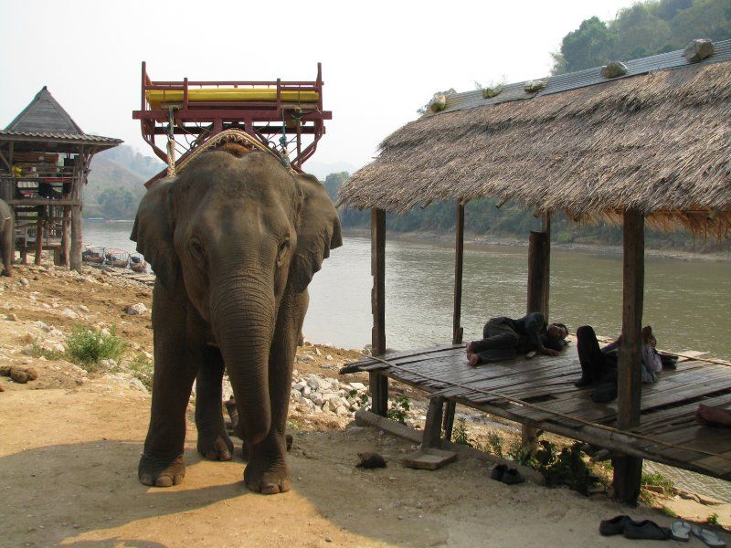

Motorbike
A Honda Click 115cc automatic, for two adults. We can set a route to how you ride.
- Karen Elephant Village, Hanging Bridge, Ban Pha Soet hot springs, a waterfall, Doi Incee. About 50 km of asphalt and a short dirt stretch, with some hills. The elephant village, the Mae Kok, the hot-springs restaurant, the waterfall, and the Big Buddha.
- Doi Incee, the Big Buddha, Ban Boon Rawd (Singha farm: tea, fruit, a restaurant), Nam Tok Khun Kon, Wat Rong Khun. About 60 km, climbs at the start. The Buddha is 700 steps up. Khun Kon is a 1.5 km hike, and the ride is still worth it if you skip the walk.
- Wat Rong Khun, a Chiang Rai city tour, Chiang Rai Beach. About 50 km, little climbing. The Golden Clock, King Mengrai, temples, the Tessaban Market, and the beach.
Personalized trip
Tell us how far you want to go and what you want to see. We'll shape the day around that.